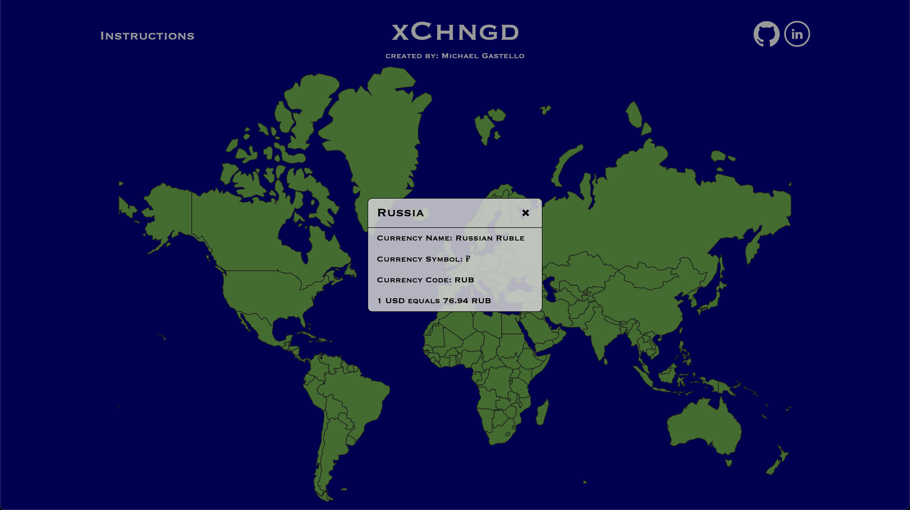

xChngd
xChngd, the first work in my portfolio, is a minimalist JavaScript project that provides users with a visually appealing and user-friendly interface to explore currency information and exchange rates for any country clicked on a world map.
The project utilizes various technologies, including vanilla JavaScript, d3.js, topoJSON, and a foreign exchange rate API from FastForex, to deliver an intuitive and informative user experience.
Visit xChngd here!